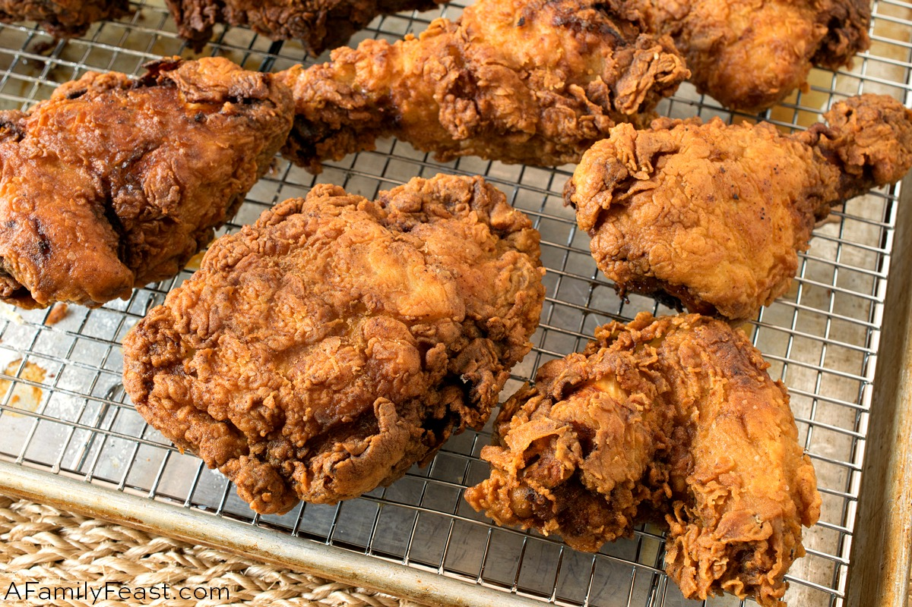

Chef John's Buttermilk Fried Chicken

Description
Buttermilk fried chicken thats marinates in seasoned buttermilk and gets coated in a seasoned flour before the
frying stage. This golden fried chicken is the perfect dish for family dinners. It's perfectly crispy and
crunchy on the outside while remaining juicy and tender ont the inside! The double-layer flavor makes this
buttermilk chicken recipe delicious!
Ingredients
- 1 (3 1/2) pound chicken, cut into 8 pieces
- 1 teaspoon black pepper
- 1 teaspoon salt
- 1 teaspoon paprika
- ½ teaspoon white pepper
- ¼ teaspoon dried rosemary
- ¼ teaspoon ground thyme
- ¼ teaspoon dried oregano
- ¼ teaspoon dried sage
- ¼ teaspoon cayenne pepper
- 2 cups buttermilk
Seasoned Flour:
- 2 cups flour
- 1 teaspoon salt
- ½ teaspoon paprika
- ½ teaspoon cayenne pepper
- ½ teaspoon garlic powder
- ½ teaspoon white pepper
- ½ teaspoon onion powder
- 2 ½ quarts peanut oil for frying
Steps
- Toss chicken pieces, black pepper, salt, paprika, white pepper, rosemary, thyme, oregano, sage, and cayenne
together in a large bowl.
- Stir in buttermilk until chicken is evenly coated. Cover and refrigerate for 6 hours.
- Combine flour, salt, paprika, cayenne, garlic powder, white pepper, and onion powder in a large shallow
dish.
- Remove chicken from buttermilk and dredge each piece in seasoned flour; shake off any excess and transfer to
a plate.
- Heat peanut oil in a large Dutch oven to 350 degrees F (175 degrees C).
- Add chicken pieces to the hot oil and fry for 10 minutes. Turn chicken pieces and fry for another 10 to15
minutes.
- Transfer fried chicken to a cooling rack set over a paper towel-lined baking sheet. Let sit for 10 minutes
before serving.